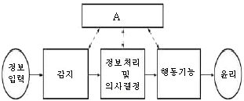
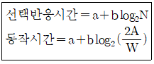
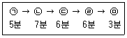
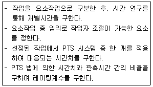

인간공학기사 (2018-03-04 기출문제)
1과목: 인간공학개론
1. 청각의 특성 중 2개음 사이의 진동수 차이가 얼마 이상이 되면 울림(beat)이 들리지 않고 각각 다른 두 개의 음으로 들리는가?
- 5Hz
- 11Hz
- 22Hz
- 33Hz
(정답률: 81%)

2. 작업대 공간의 배치 원리와 가장 거리가 먼 것은?
- 기능성의 원리
- 사용 순서의 원리
- 중요도의 원리
- 오류 방지의 원리
(정답률: 90%)
3. 사용자의 기억단계에 대한 설명으로 맞는 것은?
- 잔상은 단기기억(short-term memory)의 일종이다.
- 인간의 단기기억(short-term memory)용량은 유한하다.
- 장기 기억을 작업기억(working memory)이라고도 한다.
- 정보를 수초동안 기억하는 것을 장기기억(long-term memory)이라 한다.
(정답률: 77%)
4. 시스템의 성능 평가척도의 설명으로 맞는 것은?
- 적절성-평가척도가 시스템의 목표를 잘 반영해야 한다.
- 실제성-기대되는 차이에 적합한 단위로 측정할 수 있어야 한다.
- 무오염성-비슷한 환경에서 평가를 반복할 경우에 일정한 결과를 나타낸다.
- 신뢰성-측정하려는 변수 이외의 다른 변수들의 영향을 받지 않아야 한다.
(정답률: 82%)
5. 최소치를 이용한 인체 측정치 원리를 적용해야 할 것은?
- 문의 높이
- 안전대의 하중강도
- 비상탈출구의 크기
- 기구조작에 필요한 힘
(정답률: 92%)
6. 그림은 인간-기계 통합 체계의 인간 또는 기계에 의해서 수행되는 기본 기능의 유형이다. 그림의 A부분에 가장 적합한 내용은?

- 통신
- 정보수용
- 정보보관
- 신체제어
(정답률: 88%)
7. 동적 표시장치에 해당하는 것은?
- 도표
- 지도
- 속도계
- 도로표지판
(정답률: 91%)
8. 조종장치에 대한 설명으로 맞는 것은?
- C/R비가 크면 민감한 장치이다.
- C/R비가 작은 경우에는 조종 장치의 조종시간이 적게 필요하다.
- C/R비가 감소함에 따라 이동시간은 감소하고, 조종시간은 증가한다.
- C/R비가 반응장치의 움직인 거리를 조종장치의 움직인 거리로 나눈 값이다.
(정답률: 68%)
9. 빛이 어떤 물체에 반사되어 나온 양을 지칭하는 용어는?
- 휘도(Brightness)
- 조도(Illumination)
- 반사율(Reflectance)
- 광량(Luminous intensity)
(정답률: 64%)
10. 출입문, 탈출구, 통로의 공간, 줄사다리의 강도 등은 어떤 설계기준을 적용하는 것이 바람직한가?
- 조절식 원칙
- 최소치수의 원칙
- 평균치수의 원칙
- 최대치수의 원칙
(정답률: 91%)
11. 음압수준이 100dB인 1000Hz 순음이 sene값은 얼마인가?
- 32
- 64
- 128
- 256
(정답률: 73%)
12. 인간공학과 관련된 용어로 사용되는 것이 아닌 것은?
- Ergonomics
- Just In Time
- Human Factors
- User Interface Design
(정답률: 82%)
13. 양립성에 관한 설명으로 틀린 것은?
- 직무에 알맞은 자극과 응답방식에 대한 것을 직무 양립성이라고 한다.
- 표시장치와 제어장치의 움직임에 관련된 것을 운동 양립성이라고 한다.
- 코드와 기호를 인간들의 사고에 일치시키는 것을 개념적 양립성이라고 한다.
- 제어장치와 표지장치의 물리적 배열이 사용자 기대와 일치하도록 하는 것을 공간적 양립성이라고 한다.
(정답률: 68%)
14. 반응시간이 가장 빠른 감각은?
- 미각
- 후각
- 시각
- 청각
(정답률: 93%)
15. 시스템의 평가척도 유형으로 볼 수 없는 것은?
- 인간 기준(Human criteria)
- 관리 기준(management criteria)
- 시스템 기준(system-descriptive criteria)
- 작업 성능기준(task performance criteria)
(정답률: 50%)
16. 시각장치를 사용하는 경우보다 청각장치가 더 유리한 경우는?
- 전언이 복잡할 때
- 전언이 후에 재참조 될 때
- 전언이 즉각적인 행동을 요구할 때
- 직무상 수신자가 한 곳에 머무를 때
(정답률: 94%)
17. 표시장치를 사용할 때 자극 전체를 직접 나타내거나 재생 시키는 대신, 정보나 자극을 암호화하는 경우가 흔하다. 이와 같이 정보를 암호화하는 데 있어서 지켜야 할 일반적 지침으로 볼 수 없는 것은?
- 암호의 민감성
- 암호의 양립성
- 암호의 변별설
- 암호의 검출성
(정답률: 81%)
18. 암순응에 대한 설명으로 맞는 것은?
- 암순응 때에 원추세포는 감수성을 갖게 된다.
- 어두운 곳에서는 주로 간상세포에 의해 보게 된다.
- 어두운 곳에서 밝은 곳으로 들어갈 때 발생한다.
- 완전 암순응에는 일반적으로 5~10분 정도 소요된다.
(정답률: 74%)
19. 신호 검출이론에 의하면 시그널(Signal)에 대한 인간의 판정결과는 4가지로 구분되는데 이 중 시그널을 노이즈(Noise)로 판단한 결과를 지칭하는 용어는 무엇인가?
- 긍정(hit)
- 누락(miss)
- 허위(false alarm)
- 부정(correct rejection)
(정답률: 75%)
20. 발생확률이 0.1과 0.9로 다른 2개의 이벤트의 정보량은 발생 확률이 0.5로 같은 2개의 이벤트의 정보량에 비해 어느 정도 감소되는가?
- 51%
- 52%
- 53%
- 54%
(정답률: 45%)
2과목: 작업생리학
21. 주파수가 가청영역 이하인 소음을 무엇이라고 하는가?
- 충격 소음
- 초음파 소음
- 간헐 소음
- 초저주파 소음
(정답률: 88%)
22. 한랭대책으로써 개인위생에 해당되지 않는 사항은?
- 과음을 피할 것
- 식염을 많이 섭취할 것
- 더운 물과 더운 음식을 섭취할 것
- 얼음 위에서 오랫동안 작업하지 말 것
(정답률: 89%)
23. 최대산소소비능력(maximum, aerobic power, MAP)에 대한 설명으로 틀린 것은?
- 근육과 혈액 중에 축적되는 젖산의 양이 감소
- 이 수준에서는 주로 혐기성 에너지 대사가 발생
- 20세 전후로 최고가 되었다가 나이가 들수록 점차로 줄어듦
- 산소섭취량이 일정수준에 도달하면 더 이상 증가하지 않는 수준
(정답률: 73%)
24. 정적 작업과 국소 근육피로에 대한 설명으로 적절하지 않은 것은?
- 근육이 발휘할 수 있는 힘의 최대치를 MVC라 한다.
- 국소 근육피로를 측정하기 위하여 산소소비량이 측정된다.
- 국소 근육피로는 정적인 근육수축을 요구하는 직무들에서 자주 관찰된다.
- MVC의 10퍼센트 미만인 경우에만 정적 수축이 거의 무한하게 유지될 수 있다.
(정답률: 48%)
25. 장기간 침상 생활을 하던 환자의 뼈가 정상인의 뼈보다 쉽게 골절이 일어나는 이유는 뼈의 어떤 기능에 의해 설명되는가?(오류 신고가 접수된 문제입니다. 반드시 정답과 해설을 확인하시기 바랍니다.)
- 재형성 기능
- 조혈기능
- 지렛대 기능
- 지지 기능
(정답률: 64%)
26. 연축(twitch)이 일어나는 일련의 과정이 맞는 것은?
- 근섬유의 자극→활동전압→흥분수축연결→근원섬유의 수축
- 활동전압→근섬유의 자극→흥분수축연결→근원섬유의 수축
- 흥분수축연결→활동전압→근섬유의 자극→근원섬유의 수축
- 근원섬유의 수축→근섬유의 자극→활동전압→흥분수축연결
(정답률: 65%)
27. 허리부위의 요추는 몇 개의 뼈로 구성되어 있는 있는가?
- 4개
- 5개
- 6개
- 7개
(정답률: 88%)
28. 근력에 관한 설명으로 틀린 것은?
- 근력이란 수의적인 노력으로 근육이 등장성으로 낼 수 있는 힘의 최대치이다.
- 정적 근력의 측정은 피검자가 고정ㅈ 물체에 대하여 최대 힘을 내도록 하여 측정한다.
- 동적 근력은 가속과 관절 각도변화가 힘의 발휘에 영향을 미치므로 측정에 어려움이 있다.
- 근력의 측정은 자세, 관절각도, 동기 등의 인자가 영향을 미치므로 반복 측정이 필요하다.
(정답률: 68%)
29. 힘에 대한 설명으로 틀린 것은?
- 능동적 힘은 근수축에 의하여 생성된다.
- 힘은 근골격계를 움직이거나 안정시키는 데 작용한다.
- 수동적 힘은 관절 주변의 결합조직에 의하여 생성된다.
- 능동적 힘과 수동적 힘은 근절의 안정길이에서 발생한다.
(정답률: 56%)
30. 전신진동의 영향에 대한 설명으로 틀린 것은?
- 10~25Hz에서 시성능이 가장 저하된다.
- 5Hz이하의 낮은 진동수에서 운동성능이 가장 저하된다.
- 머리와 어깨 부위의 공명주파수는 20~30Hz이다.
- 등이나 허리뼈에 가장 위험한 주파수는 60~90Hz이다.
(정답률: 58%)
31. 자율신경계의 교감, 부교감 신경에 대한 설명 중 틀린 것은?
- 교감 신경은 동공을 축소시키고, 부교감 신경은 동공을 확대시킨다.
- 교감 신경은 동공을 확대시키고, 부교감 신경은 동공을 축소시킨다.
- 교감 신경은 심장 박동을 촉진시키고, 부교감 신경을 심장 박동을 억제시킨다.
- 교감 신경은 소화 운동을 억제시키고, 부교감 신경은 소화 운동을 촉진시킨다.
(정답률: 65%)
32. 남성 작업자의 육체작업에 대한 에너지가를 평가한 결과 산소소모량이 1.5L/min이 나왔다. 작업자의 4시간에 대한 휴식시간은 약 몇 분 정도인가? (단. Murrell의 공식을 이용한다.)
- 75분
- 100분
- 125분
- 150분
(정답률: 62%)
33. 근육이 수축할 때 생성 및 소모되는 물질(에너지원)이 아닌 것은?
- 글리코겐(glycogn)
- CP(creatine phosphate)
- 글리콜리시스(glycolysis)
- ATP(adenosine triphosphate)
(정답률: 82%)
34. 인간이 휴식을 취하고 있을 때 혈액이 가장 많이 분포하는 신체부위는?
- 뇌
- 심장근육
- 근육
- 소화기간
(정답률: 75%)
35. 일반적으로 소음계는 주파수에 따른 사람의 느낌을 감안하여 A, B, C 세 가지 특성에서 음압을 측정할 수 있도록 보정되어 있는데, A특성치란 몇 phon의 등음량곡선과 비슷하게 주파수에 따른 반응을 보정하여 측정한 음압수준을 말하는가?
- 20
- 40
- 70
- 100
(정답률: 83%)
36. 공기정화시설을 갖춘 사무실에서의 환기기준으로 맞는 것은?
- 환기횟수는 시간당 2회 이상으로 한다.
- 환기횟수는 시간당 3회 이상으로 한다.
- 환기횟수는 시간당 4회 이상으로 한다.
- 환기횟수는 시간당 6회 이상으로 한다.
(정답률: 76%)
37. 실내표면에서 추천 반사율이 낮은 것부터 높은 순서대로 나열한 것은?
- 벽＜가구＜천장＜바닥
- 천장＜벽＜가구＜바닥
- 가구＜바닥＜벽＜천장
- 바닥＜가구＜벽＜천장
(정답률: 81%)
38. 일반적인 성인 남성 작업자의 산소 소비량이 2.5L/min일 때, 에너지소비량은 약 얼마인가?
- 7.5kcal/min
- 10.0kcal/min
- 12.5kcal/min
- 15.0kcal/min
(정답률: 78%)
39. 빛의 측정치를 나타내는 단위의 관계가 틀린 것은?
- 1 fc=10lux
- 반사율=휘도/조도
- 1candela=10lumen
- 조도=광도/단위면적(m2)
(정답률: 62%)
40. 신체의 작업부하에 대하여 작업자들이 주관적으로 지각한 신체적 노력의 정도를 6~20의 값으로 평가한 척도는 무엇인가?
- 부정맥지수
- 점별융합주파수(VFF)
- 운동자각도(Borg's RPE)
- 최대산소소비능력(maximum aerovic power)
(정답률: 77%)
3과목: 산업심리학 및 관계법규
41. 제조물책임법상 제조업자가 제조물에 대하여 제조ㆍ가공상의 주의의무를 이행하였는지에 관계없이 제조물이 원래 의도한 설계와 다르게 제조ㆍ가공됨으로써 안전하지 못하게 된 경우에 해당되는 결함은?
- 제조상의 결함
- 설계상의 결함
- 표시상의 결함
- 기타 유형의 결함
(정답률: 70%)
42. 사고의 유형, 기인물 등 분류항목을 큰 순서대로 분류하여 사고방지를 위해 사용하는 통계적 원인분석 도구는?
- 관리도(Control Chart)
- 크로스도(Cross Diagram)
- 파레토도(Pareto Diagram)
- 특성요인도(Cause and Effect Diagram)
(정답률: 74%)
43. 리더십 이론 중 관리격자이론에서 인간에 대한 관심이 낮은 유형은?
- 타협형
- 인기형
- 이상형
- 무관심형
(정답률: 90%)
44. 알더퍼(P.Alderfer)의 EGR 이론에서 3단계로 나눈 욕구 유형에 속하지 않은 것은?
- 성취욕구
- 성장욕구
- 존재욕구
- 관계욕구
(정답률: 68%)
45. 레빈(Lewin)의 인간행동에 관한 공식은?
- B=f(PㆍE)
- B=f(PㆍB)
- B=E(Pㆍf)
- B=f(BㆍE)
(정답률: 85%)
46. Max Weber가 제시한 관료주의 조직을 움직이는 4가지 기본원칙으로 틀린 것은?
- 구조
- 노동의 분업
- 권한의 통제
- 통제의 범위
(정답률: 53%)
47. 집단역학에 있어 구성원 상호간의 선호도를 기초로 집단 내부에서 발생하는 상호관계를 분석하는 기법을 무엇이라 하는가?
- 갈등 관리
- 소시오메트리
- 시너지 효과
- 집단의 응집력
(정답률: 84%)
48. 인간의 불안전행동을 예방하기 위해 Harvey에 의해 제안된 안전대책의 3E에 해당하지 않는 것은?
- Education
- Enforcement
- Engineering
- Environment
(정답률: 88%)
49. 재해 발생에 관한 하인리히(H.W. Heinrich)의 도미노 이론에서 제시된 5가지 요인에 해당하지 않는 것은?
- 제어의 부족
- 개인적 결함
- 불안전한 핻동 및 상태
- 유전 및 사회 환경적 요인
(정답률: 83%)
50. 휴먼에러로 이어지는 배경원인이 아닌 것은?
- 인간(Man)
- 매체(Media)
- 관리(Management)
- 재료(Manterial)
(정답률: 87%)
51. 선택반응시간(Hick의 법칙)과 동작시간(Fitts의 법칙)의 공식에 대한 설명으로 맞는 것은?

- N은 자극과 반응의 수, A는 목표물의 너비, W는 움직인 거리를 나타낸다.
- N은 감각기관의 수, A는 목표물의 너비, W는 움직인 거리를 나타낸다.
- N은 자극과 반응의 수, A는 움직인 거리, W는 목표물의 너비를 나타낸다.
- N은 감각기관의 수, A는 움직인 거리, W는 목표물의 너비를 나타낸다.
(정답률: 74%)
52. 연 평균 근로자수가 2000명인 회사에서 1년에 중상해 1명과 경상해 1명이 발생하였다. 연천인률은 얼마인가?
- 0.5
- 1
- 2
- 4
(정답률: 73%)
53. 작업수행에 의해 발생하는 피로를 방지, 경감시키고 효율적으로 회복시키는 방법으로 틀린 것은?
- 동일한 작업을 될 수 있는 한 적은 에너지로 수행할 수 있도록 한다.
- 정적 근작업을 하도록 하여 작업자의 에너지소비를 될 수 있는 한 줄인다.
- 작업속도나 작업의 정확도가 작업자에게 너무 과중하게 되지 않도록 한다.
- 작업방법을 개선하여 무리한 자세로 작업이 진행되지 않도록 하고 특히 정적 근작업을 배제한다.
(정답률: 69%)
54. 리더십의 유형에 따라 나타나는 특징에 대한 설명으로 틀린 것은?
- 권위주의적 리더십-리더에 의해 모든 정책이 결정된다.
- 권위주의적 리더십-각 구성원의 업적을 평가할 때 주관적이기 쉽다.
- 민주적 리더십-모든 정책은 리더에 의해 지원을 받는 집단토론식으로 결정된다.
- 민주적 리더십-리더는 보통 과업과 그 과업을 함께 수행할 구성원을 지정해 준다.
(정답률: 78%)
55. 인간오류확률 추정 기법 중 초기 사건을 이원적(binary) 의사결정(성공 또는 실패)가 지들로 모형화하고, 이 이후의 사건들의 확률은 모두 선행 사건에 대한 조건부 확률을 부여하여 이원적 의사결정 가지들로 분지해나가는 방법은?
- 결함 나무 분석(Fault Tree Analysis)
- 조작자 행동 나무(Operator Action Tree)
- 인간 오류 시뮬레이터(Human Acyion Tree)
- 인간실수율 예측기법(Technique for Human Error Rate Prediction)
(정답률: 55%)
56. 오류를 범할 수 없도록 사물을 설계하는 기법은?
- Fail-Safe 설계
- Interlock 설계
- Exclusion 설계
- Prevention 설계
(정답률: 50%)
57. 인간 신뢰도에 대한 설명으로 맞는 것은?
- 반복되는 이산적 직무에서 인간실수확률은 단위시간당 실패수로 표현한다.
- 인간 신뢰도는 인간의 성능이 특정한 기간 동안 실수를 범하지 않을 확률로 정의된다.
- THERP는 완전 독립에서 완전 정(正)종속까지의 비연속을 종속정도에 따라 3수준으로 분류하여 직무의 종속성을 고려한다.
- 연속적 직무에서 인간의 실수율이 불변(stationary)이고, 실수과정이 과거와 무관(independent)하다면 실수과정은 베르누이 과정으로 묘사된다.
(정답률: 65%)
58. 인간이 장시간 주의를 집중하지 못하는 것은 주의의 어떤 특성 때문인가?
- 선택성
- 방향성
- 변동성
- 배칭성
(정답률: 77%)
59. 미국의 산업안전보건연구원(NIOSH)에서 직무 스트레스 요인에 해당하지 않는 것은?
- 성능 요인
- 환경 요인
- 작업 요인
- 조직 요인
(정답률: 76%)
60. 스트레스에 관한 설명으로 틀린 것은?
- 위협적인 환경특성에 대한 개인의 반응이라고 볼 수 있다.
- 스트레스 수준은 작업 성과와 정비례의 관계에 있다.
- 적정수준의 스트레스는 작업성과에 긍정적으로 작용할 수 있다.
- 지나친 스트레스를 지속적으로 받으며 인체는 자기조절능력을 상실할 수 있다.
(정답률: 83%)
4과목: 근골격계질환 예방을 위한 작업관리
61. 파레토 차트에 관한 설명으로 틀린 것은?
- 재고관리에서는 ABC곡선으로 부르기도 한다.
- 20%정도에 해당하는 중요한 항목을 찾아 내는 것이 목적이다.
- 불량이나 사고의 원인이 되는 중요한 항목을 찾아 관리하기 위함이다.
- 작성 방법은 빈도수가 낮은 항목부터 큰 항목 순으로 차례대로 나열하고, 항목별 점유비율과 누적비율을 구한다.
(정답률: 76%)
62. 유해요인조사도구 중 JSI(Job Strain Index)의 평가 항목에 해당하지 않는 것은?
- 손/손목의 자세
- 1일 작업의 생산량
- 힘을 발휘하는 강도
- 힘을 발휘하는 지속시간
(정답률: 79%)
63. 근골격계 질환 예방을 위한 바람직한 관리적 개성 방안으로 볼 수 없는 것은?
- 규칙적이고 적절한 휴식을 통하여 피로의 누적을 예방한다.
- 작업 확대를 통하여 한 작업자가 할 수 있는 일의 다양성을 넓힌다.
- 전문적인 스트레칭과 체조 등을 교육하고 작업 중 수시로 실시하도록 유도한다.
- 중량물 운반 등 특정 작업에 적합한 작업자를 선별하여 상대적 위험도를 경감시킨다.
(정답률: 71%)
64. 적절한 입식작업대 높이에 대한 설명으로 맞는 것은?
- 일반적으로 어깨 높이를 기준으로 한다.
- 작업자의 체격에 따라 작업대의 높이가 조정 가능하도록 하는 것이 좋다.
- 미세부품 조립과 같은 섬세한 작업일수록 작업대의 높이는 낮아야 한다.
- 일반적인 조립라인이나 기계 작업 시에는 팔꿈치 높이보다 5~10cm 높아야 한다.
(정답률: 88%)
65. 손동작(manual operation)을 목적에 따라 효율적과 비효율적인 기본 동작으로 구분한 것은?
- task
- motion
- process
- therbling
(정답률: 77%)
66. SEARCH 원칙에 대한 내용으로 틀린 것은?
- Composition : 구성
- How often : 얼마나 자주
- Alter sequence : 순서의 변경
- Simplify opertion : 작업의 단순화
(정답률: 70%)
67. 동작경계의 원칙 3가지 범주에 들어가지 않은 것은?
- 작업개선의 원칙
- 신체의 사용에 관한 원칙
- 작업장의 배치에 관한 원칙
- 공구 및 설비의 디자인에 관한 원칙
(정답률: 61%)
68. 작업관리에 관한 설명으로 틀린 것은?
- Gilbreth 부부는 적은 노력으로 최대의 성과를 짧은 시간에 이룰 수 있는 작업방법을 연구한 동작연구(Motion Study)의 창시자로 알려져 있다.
- Taylor(Frederick W. Taylor)는 벽돌 쌓기 작업을 대상으로 작업방법과 작업도구를 개선하였으며 이를 발전시켜 과학적 관리법을 주장하였다.
- 작업관리는 생산성 향상을 목적으로 경제적인 작업방법을 연구하는 작업연구와 표준작업시간을 결정하기 위한 작업측정으로 구분할 수 있다.
- Hawthorn의 실험결과는 작업장의 물리적 조건보다는 인간관계와 같은 사회적 조건이 생산성에 더 큰 영향을 준다는 사실에 관심을 갖도록 한 시발점이 되었다.
(정답률: 68%)
69. 워크샘플링 조사에서 초기 idle rate가 0.⑤라면, 99% 신뢰도를 위한 워크샘플링 회수는 약 몇 회인가? (단, u0.995는 2.58이다.)
- 1232
- 2557
- 3060
- 3162
(정답률: 36%)
70. A공장의 한 컨베이어 라인에는 5개의 작업공정으로 이루어져 있다. 각 작업공정의 작업시간이 다음과 같을 때 이 공정의 균형효율은 약 얼마인가? (단, 작업은 작업자 1명이 맡고 있다.)

- 21.86%
- 22.86%
- 78.14%
- 77.14%
(정답률: 61%)
71. 관측 평균시간이 5분, 레이팅 계수가 120%, 여유시간이 0.4 분인 작업에서 제품의 개당 표준시간과 여유율(%)을 내경법에 의하여 구하면 각각 얼마인가?
- 4.5분, 2.20%
- 6.4분, 6.25%
- 8.5분, 7.25%
- 9.7분, 10.25%
(정답률: 63%)
72. 공정도에 사용되는 공정도 기호인 "○"으로 표시하기에 가장 적합한 것은?
- 작업 대상물을 다른 장소로 옮길 때
- 작업 대상물이 분해되거나 조립할 때
- 작업 대상물을 지정된 장소에 보관할 때
- 작업 대상물이 올바르게 시행되었는지를 확인할 때
(정답률: 78%)
73. 사람이 행하는 작업을 기본 동작으로 분류하고, 각 기본 동작들을 동작의 성질과 조건에 따라 이미 정해진 기준 시간을 적용하여 전체 작업의 정미시간을 구하는 방법은?
- PTS법
- Rationg 법
- Therbling 분석
- Work Sampling 법
(정답률: 68%)
74. 근골격계 질환 예방관리 프로그램의 기본 원칙에 속하지 않는 것은?
- 인식의 원칙
- 시스템 접근의 원칙
- 일시적인 문제 해결의 원칙
- 사업장 내 자율적 해결 원칙
(정답률: 79%)
75. 상완, 전완, 손목을 그룹 A로 목, 상체, 다리를 그룹 B로 나누어 측정, 평가하는 유해요인의 평가방법은?
- RULA(rapid upper limb assessment)
- REBA(rapid entire body assessment)
- OWAS(Ovako working posture analysis system)
- NIOSH 들기작업지침(Revised NIOSH lifting equation)
(정답률: 79%)
76. NOISH Lifting Equation(NLE) 평가에서 권장무게한계(Recommended Weight Limit)가. 20kg이고 현재 작업물의 무게가 23kg일 때, 들기 지수(Lifting Index)의 값과 이에 대한 쳥가가 맞는 것은?
- 0.87. 요통의 발생위험이 나다.
- 0.87, 작업을 재설계할 필요가 있다.
- 1.15, 요통의 발생위험이 높다.
- 1.15, 작업을 재설계할 필요가 없다.
(정답률: 74%)
77. 근골격계 질환 중 어깨 부위 질환이 아닌 것은?
- 외상과염(lateral epicondlitis)
- 극상근 건염(supraspinatus tendinitis)
- 건봉하 점액낭염(subacromial bursitis)
- 상완이두 건막염(biciptal tenosynovitis)
(정답률: 81%)
78. 근골격계질환의 예방에서 단기적 관리방안으로 볼 수 없는 것은?
- 안전한 작업방법의 교육
- 작업자의 대한 휴식시간의 배려
- 근골격계질환 예방ㆍ관리 프로그램의 도입
- 휴게실, 운동시설 등 기타 관리시설의 확충
(정답률: 85%)
79. 다음설명은 수행도 평가의 어느 방법을 설명한 것인가?

- 속도평가법
- 객관적평가법
- 합성평가법
- 웨스팅하우스법
(정답률: 63%)
80. 근골격계 질환을 유발시킬 수 있는 주료부담작업에 대한 설명으로 맞는 것은?
- 충격 작업의 경우 분당 2회를 기준으로 한다.
- 단순 반복 작업은 대개 4시간을 기준으로 한다.
- 들기 작업의 경우 10kg, 25kg이 기준무게로 사용된다.
- 쥐기(grip)작업의 경우 취는 힘과 1kg과 4.5kg을 기준으로 사용한다.
(정답률: 71%)